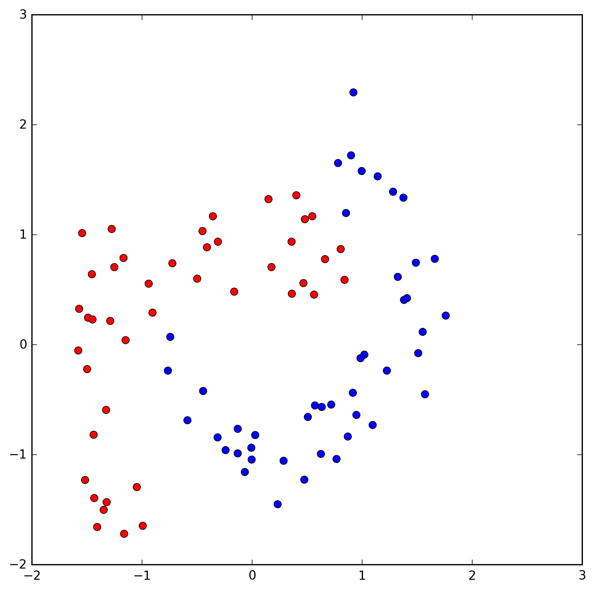
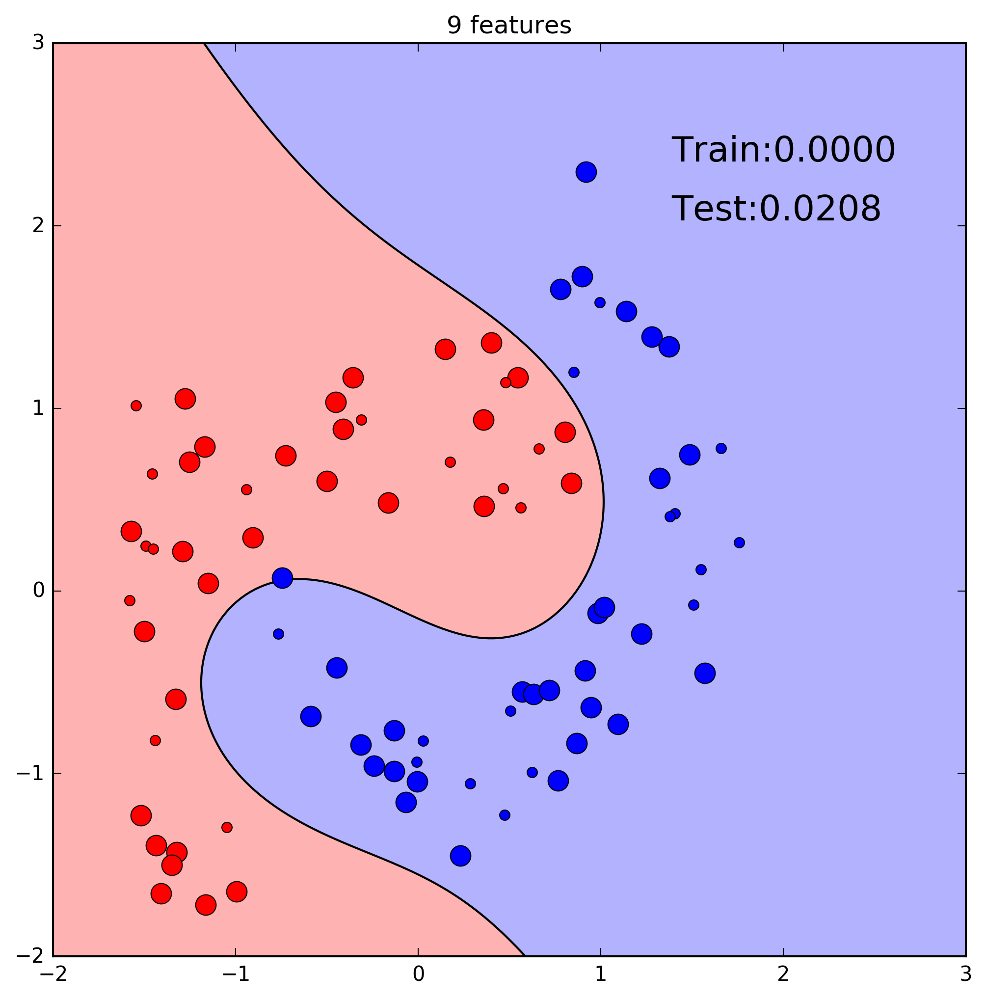

Aprendizagem Automática
5. Overfitting and Classification
Ludwig Krippahl
Overfitting and Classification
Summary
- Scoring classifiers
- Cross validation
- Logistic regression: model selection and regularization
Overfitting and Classification
Scoring classifiers
Scoring classifiers
Scoring binary classifiers
- For regression, sum of squared distance to the line was useful: $$E(\theta|\mathcal{X})=\sum_{t=1}^{n} [y^t - g(x^t|\theta)]^2$$
- With Logistic Regression the function to minimize is: $$E(\widetilde{w}) = - \sum_{n=1}^{N} \left[ t_n \ln g_n + (1-t_n) \ln (1-g_n) \right]$$ $$g_n = \frac{1}{1+e^{-(\vec{w}^T\vec{x_n}+w_0)}}$$
- (Regression to the probability of belonging to $C_1$)
Scoring classifiers
Scoring binary classifiers
- How good is the hypothesis?
- The
logistic loss or cross entropy function
$$L(\widetilde{w}) = \frac{1}{N} \sum_{n=1}^{N} H (p_n,q_n) = -\frac{1}{N}\sum \left[t_n \ln g_n + (1-t_n) \ln (1-g_n) \right]$$
-
Brier score : average quadratic error between the predicted probability and the class.
$$E(\widetilde{w})=\frac{1}{N}\sum_{n=1}^{N} [t_n - g_n]^2$$
- Note: this is not a quadratic error to the discriminant but to the predicted probability.
Scoring classifiers
Scoring binary classifiers
- Brier score: error between $g_n$ and $t_n$

Scoring classifiers
Scoring binary classifiers
- Confusion matrix:
| Example Class | ||
|---|---|---|
| Prediction | Class 1 | Class 0 |
| Class 1 | True Positive | False Positive |
| Class 0 | False Negative | True Negative |
Scoring classifiers
Scoring binary classifiers
$$ accuracy = \frac{true\ positives + true\ negatives}{N}$$
$$precision = \frac{true\ positives}{true\ positives + false\ positives}$$
$$recall = \frac{true\ positives}{true\ positives + false\ negatives}$$
Scoring classifiers
Scoring binary classifiers
- F1 Score: harmonic mean of precision and recall
$$F_1 = 2 \times \frac{precision \times recall}{precision + recall}$$
$$F_1 = \frac{2 \times true\ positives}{2 \times true\ pos. + false\ pos. + false\ neg.}$$
Scoring classifiers
Binary Classifiers
Tipically, consider $g_n\geq 0.5$ for predicting Class 1
More generally, consider $g_n\geq \alpha,\ \alpha \in [0,1]$
Scoring classifiers
Binary Classifiers
Tipically, consider $g_n\geq 0.5$ for predicting Class 1
More generally, consider $g_n\geq \alpha,\ \alpha \in [0,1]$
As $\alpha$ changes, the number of false and true positives also changes
Scoring classifiers
Receiver Operating Characteristic
Plot true pos. vs false pos. for different $\alpha$
We can use area under the

Scoring classifiers
Scoring binary classifiers
- Logistic Regression: Loss function, Brier score
- Precision, Recall, Accuracy
- Confusion Matrix
- Receiver Operating Characteristic curve
- Classifiers in Scikit Learn include a score method
- Returns accuracy, the fraction of correctly classified examples
from sklearn.linear_model import LogisticRegression
reg = LogisticRegression()
reg.fit(X_r,Y_r)
test_error = 1-reg.score(X_t,Y_t)
Overfitting and Classification
Cross-Validation
Cross-Validation
Train, Validate, Test
- Previously, we saw:
- Minimize
Training Error to generate hypothesis - Measure
Validation Error on hypothesis to select - Measure
Test Error to estimateTrue Error - Problem: select model based on one estimate (one hypothesis)
Cross-Validation
- Each train and validation split is one sample
Cross-Validation
Average hypotheses from the same class (model)
- Split data into
Training Set andTest Set - The Test Set is for an unbiased estimate of the true error of the final hypothesis
- Validate with average of K hypotheses
- Split Training Set into K folds
- Average K validations: each fold after training on the other K-1 folds
Cross-Validation
Cross-Validation
Cross-Validation
Cross-Validation
Cross-Validation
Cross-Validation
Train+Validation vs Cross-Validation
- With training and validation we estimate the true error of an hypothesis
- We then use these estimates to select the best hipothesis from different models
- With cross-validation we average the estimated true error of several hypotheses
- This gives us a better estimate of the true error for that model, on average, on this kind of data
- But does not give an estimate of the true error of any specific hypothesis
Cross-Validation
K-fold Cross-Validation
- Split points into K folds
- With N folds:
leave-one-out cross-validation.
Cross-Validation and Testing
- Possible problem: class imbalance.
- Unless large data set, class proportions may change in folds or training and test.
- Use
Stratified sampling : random sampling that preserves proportions.
Overfitting and Classification
Example
Example
- Find the best model for classifying these data:

Example
Load, shuffle, standardize features:
import numpy as np
from sklearn.utils import shuffle
mat = np.loadtxt('dataset_90.txt',delimiter=',')
data = shuffle(mat)
Ys = data[:,0]
Xs = data[:,1:]
means = np.mean(Xs,axis=0)
stdevs = np.std(Xs,axis=0)
Xs = (Xs-means)/stdevs
Example
We want to select the best model expanding the data:
$$\{x_1, x_2\}$$ $$\{x_1, x_2, x_1\times x_2\}$$ $$\{x_1, x_2, x_1\times x_2, x_1^2\}$$ $$...$$
def poly_16features(X):
"""Expand data polynomially
"""
X_exp = np.zeros((X.shape[0],X.shape[1]+14))
X_exp[:,:2] = X
X_exp[:,2] = X[:,0]*X[:,1]
X_exp[:,3] = X[:,0]**2
X_exp[:,4] = X[:,1]**2
X_exp[:,5] = X[:,0]**3
X_exp[:,6] = X[:,1]**3
X_exp[:,7] = X[:,0]**2*X[:,1]
X_exp[:,8] = X[:,1]**2*X[:,0]
#... rest of the expansion here
return X_exp
Example
Expand and split (stratified):
from sklearn.model_selection import train_test_split
Xs=poly_16features(Xs)
X_r,X_t,Y_r,Y_t = train_test_split(Xs, Ys, test_size=0.33, stratify = Ys)
Generate the fold indexes with KFold (example)
from sklearn.model_selection import KFold
x = [0, 1, 2, 3, 4, 5, 6, 7, 8, 9, 10, 11]
kf = KFold(n_splits=4)
for train, valid in kf.split(x):
print (train, valid)
[ 3 4 5 6 7 8 9 10 11] [0 1 2]
[ 0 1 2 6 7 8 9 10 11] [3 4 5]
[ 0 1 2 3 4 5 9 10 11] [6 7 8]
[ 0 1 2 3 4 5 6 7 8] [9 10 11]
Example
Stratified k-folds:
- Tries to keep the same distribution of classes in each fold
from sklearn.model_selection import StratifiedKFold
ys = [1,1,0,1,0,1,0,1,0,1,1,1]
kf = StratifiedKFold(n_splits=4)
for train,valid in kf.split(ys,ys):
print(train,valid)
[ 3 4 5 6 7 8 9 10 11] [0 1 2]
[ 0 1 2 6 7 8 9 10 11] [3 4 5]
[ 0 1 2 3 4 5 8 10 11] [6 7 9]
[ 0 1 2 3 4 5 6 7 9] [8 10 11]
Example
- Compute train and validation Brier error: (assumes classes 0,1)
from sklearn.linear_model import LogisticRegression
def calc_fold(feats, X,Y, train_ix,valid_ix,C=1e12):
"""return error for train and validation sets"""
reg = LogisticRegression(C=C, tol=1e-10)
reg.fit(X[train_ix,:feats],Y[train_ix])
prob = reg.predict_proba(X[:,:feats])[:,1]
squares = (prob-Y)**2
return np.mean(squares[train_ix]),np.mean(squares[valid_ix])
- Generate folds and loop
folds = 10
kf = StratifiedKFold(n_splits=folds)
for feats in range(2,16):
tr_err = va_err = 0
for tr_ix,va_ix in kf.split(Y_r,Y_r):
r,v = calc_fold(feats,X_r,Y_r,tr_ix,va_ix)
tr_err += r
va_err += v
print(feats,':', tr_err/folds,va_err/folds)
Example
Example
Example

Example
Example
Example
Example
- Cross-validation error (red), best model: 9 features
Example
- Retrain on whole training set, measure test error.

Example
Model selection with cross-validation
- Preprocess: shuffle; normalize or standardize
- Reserve a
test set (stratified?) - Partition
training set into n folds (stratified?) -
Cross validation to select the best model - Train best model with all
training set - Estimate true error of final hypothesis on
test set - Why?
- Cross-validation error is unbiased and could be a good estimate of the true error
- But becomes biased by using it (and those examples) to select the best model
Overfitting and Classification
Regularization
Regularization
Logistic regression can be regularized
- For example, with L2 norm $$\lambda \sum_{j=1}^{m} w_j^2$$
- LogisticRegression class offers a $C$ parameter: $$\frac{1}{C} \sum_{j=1}^{m} w_j^2$$
Regularization
Ridge regression is intuitive:
$$y = \theta_1 x^2 + \theta_2 x + \theta_3$$ $$J(\theta) = \sum_{t=1}^{n} \left[ y^t - g(x^t|\theta) \right]^2 + \lambda \sum_{j=1}^{m} \theta_j^2$$In logistic regression this seems less intuitive:
$$g(\vec{x},\widetilde{w}) = \frac{1}{1+e^{-\widetilde{w}^T\vec{x}}}$$ $$\frac{1}{C} \sum_{j=1}^{m} w_j^2$$Regularization
$$\widetilde{w}^T \vec{x} = 0$$
Regularization
- Large $\widetilde{w}$, steep logistic function $$g(\vec{x},\widetilde{w}) = \frac{1}{1+e^{-\widetilde{w}^T\vec{x}}}$$
Regularization
- A small $\widetilde{w}$ lowers the slope $$g(\vec{x},\widetilde{w}) = \frac{1}{1+e^{-\widetilde{w}^T\vec{x}}}$$
Regularization
- No regularization, overfitting
Regularization
- Regularization, large margins
Regularization
- We'll use the 15 features model (overfitting)
Regularization
Cross-val. error vs $log_{10}(C)$
15 features, $C=10^5$
Note
Note on data expansion
- We are doing this manually to illustrate the idea
- In practice, we would use other classifiers (we'll see later)
Overfitting and Classification
Summary
Overfitting and Classification
Summary
- Scoring and evaluating classifiers
- Cross-validation and model selection
- Cross-validation and regularization
- Stratified sampling: train, folds, test
Further reading
- Alpaydin Section 2.7
Aprendizagem Automática
5. Overfitting and Classification
Ludwig Krippahl